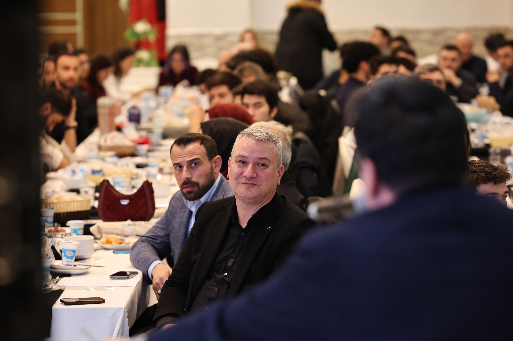
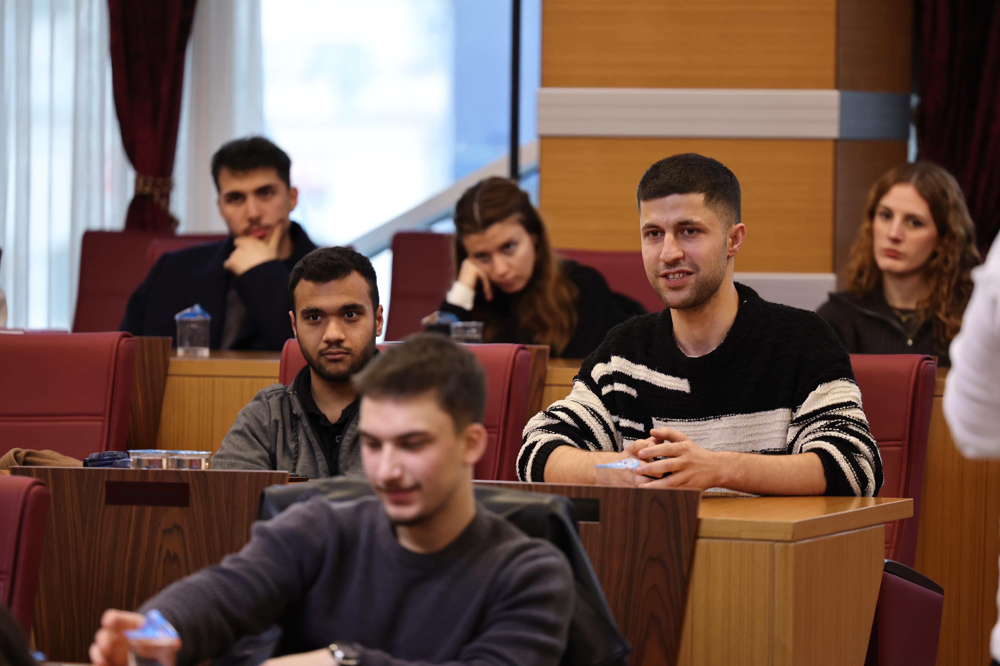

Teknoloji & Kariyer
Mühendislik Öğrencileri Buluşması
Genç mühendislerin projeleri, akademi ve iş dünyasının temsilcileriyle aynı masada.
Haberi inceleBirlikte düşünüyor, birlikte üretiyoruz.

Gençlerin katılımıyla ortak bir gelecek.
Bizi tanıyın02 / BİRLİKTE ÜRETİYORUZFikirlerin hayata geçtiği buluşmalar.
Çalışmaları inceleyin03 / KATILIMŞehrine değer katacak fikrini paylaş.
İlk adımı atınGENÇLİK MECLİSİNDEN
Meclisten, buluşmalardan ve ortak çalışmalardan
öne çıkanlar.
3 çalışma gösteriliyor.
Genç mühendislerin projeleri, akademi ve iş dünyasının temsilcileriyle aynı masada.
Çalışmayı inceleFaaliyetler, yeni dönem planları ve gençlerin önerileri ortak bir gündemde buluştu.
Çalışmayı incele Buluşma & Dayanışma
Buluşma & DayanışmaYerli ve uluslararası öğrenciler, taleplerini ve geleceğe dair fikirlerini paylaştı.
Çalışmayı inceleAramanıza uygun çalışma bulunamadı. Farklı bir kelime veya kategori deneyin.

MECLİSİMİZİ TANI
Gençlerin Serdivan’ın geleceğine katıldığı bir buluşma zemini.
Serdivan Kent Konseyi Gençlik Meclisi; gençlerin görüşlerini paylaşmasına, birlikte düşünmesine ve ortak çalışmalar geliştirmesine alan açıyor.
Üniversite topluluklarından teknoloji takımlarına uzanan katılımıyla, sosyal, kültürel, akademik ve kişisel gelişimi destekleyen çalışmalar yürütüyor.
KatılımcıFarklı görüşlerin duyulduğu ortak bir masa.
ÜretkenBilgiyi, deneyimi ve gençlerin fikirlerini buluşturan çalışmalar.
BirlikteÜniversite, yerel yönetim ve kent yaşamı arasında bağ.
GELECEĞE BİRLİKTE
Bir önerin, üzerinde çalıştığın bir projen
ya da paylaşmak istediğin bir deneyimin olabilir.
Çalışmaları incele; ilgi alanına yakın buluşmaları ve projeleri tanı.
Neyi geliştirmek istediğini ve nasıl katkı sunabileceğini kısaca anlat.
Katılım ve güncel çalışmalar hakkında belediyeden Gençlik Meclisi’ne yönlendirme iste.
İlk adım, tanışmak.
İletişim bilgilerini görAKLINDA BULUNSUN
Resmî haberlerde öğrenci buluşmaları, mühendislik ve teknoloji projelerinin iş dünyasına tanıtılması, gençlerin görüşlerinin yerel yönetimle paylaşılması öne çıkıyor. Sosyal, kültürel, akademik ve kişisel gelişim meclisin çalışma hedefleri arasında yer alıyor.
Belediyenin 444 54 50 numaralı iletişim merkezini arayabilir veya info@serdivan.bel.tr adresine yazabilirsin. Gençlik Meclisi’ne katılım ve ilgili birime yönlendirme talebini belirtmen yeterli. Güncel yaş koşulu, üyelik takvimi ve gerekli belgeleri ilgili birimden öğrenebilirsin.
Güncel duyurular için Serdivan Belediyesi’nin resmî sitesini takip edebilirsin. Buradaki çalışma kartları gerçekleşmiş etkinlikleri anlatır; açık başvuru veya yaklaşan etkinlik ilanı değildir.
Çalışma özetleri ve iletişim bilgileri belediyenin kamuya açık kaynaklarından derlendi. Her çalışma sayfasında ilgili resmî habere bağlantı bulunur. Kaynakların tamamını incele.
İLETİŞİM
Gençlik Meclisi hakkında bilgi ve yönlendirme için
Serdivan Belediyesi’ne ulaşabilirsin.